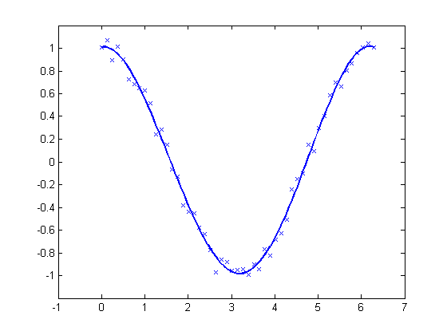

Introduction to Spline Fitting
Here are some simple examples that illustrate the use of the spline functions in Curve Fitting Toolbox™.
Contents
Interpolation
You can construct a cubic spline interpolant that matches the cosine function at the following sites x, using the csapi command.
x = 2*pi*[0 1 .1:.2:.9]; y = cos(x); cs = csapi(x,y);
You can then view the interpolating spline by using fnplt.
fnplt(cs,2); axis([-1 7 -1.2 1.2]) hold on plot(x,y,'o') hold off
Checking the Interpolant
The cosine function is 2*pi-periodic. How well does our cubic spline interpolant do in that regard? One way to check is to compute the difference in the first derivative at the two endpoints.
diff( fnval( fnder(cs), [0 2*pi] ) )
ans = -0.1375
To enforce periodicity, use csape instead of csapi.
csp = csape( x, y, 'periodic' ); hold on fnplt(csp,'g') hold off
Now the check gives
diff( fnval( fnder(csp), [0 2*pi] ) )
ans = -2.2806e-017
Even the second derivative now matches at the endpoints.
diff( fnval( fnder(csp, 2), [0 2*pi] ) )
ans = -2.2204e-016
The piecewise linear interpolant to the same data is available via spapi. Here we add it to the previous plot, in red.
pl = spapi(2, x, y); hold on fnplt(pl, 'r', 2) hold off
Smoothing
If the data are noisy, you usually want to approximate rather than interpolate. For example, with these data
x = linspace(0,2*pi,51);
noisy_y = cos(x) + .2*(rand(size(x))-.5);
plot(x,noisy_y,'x')
axis([-1 7 -1.2 1.2])
interpolation would give the wiggly interpolant shown below in blue.
hold on fnplt( csapi(x, noisy_y) ) hold off
In contrast, smoothing with a proper tolerance
tol = (.05)^2*(2*pi)
tol =
0.0157
gives a smoothed approximation, shown below in red.
hold on fnplt( spaps(x, noisy_y, tol), 'r', 2 ) hold off
The approximation is much worse near the ends of the interval, and is far from periodic. To enforce periodicity, approximate to periodically extended data, then restrict the approximation to the original interval.
noisy_y([1 end]) = mean( noisy_y([1 end]) ); lx = length(x); lx2 = round(lx/2); range = [lx2:lx 2:lx 2:lx2]; sps = spaps([x(lx2:lx)-2*pi x(2:lx) x(2:lx2)+2*pi],noisy_y(range),2*tol);
This gives the more nearly periodic approximation, shown in black.
hold on fnplt(sps, [0 2*pi], 'k', 2) hold off
Least-Squares Approximation
Alternatively, you could use least-squares approximation to the noisy data by a spline with few degrees of freedom.
For example, you might try a cubic spline with just four pieces.
spl2 = spap2(4, 4, x, noisy_y); fnplt(spl2,'b',2); axis([-1 7 -1.2 1.2]) hold on plot(x,noisy_y,'x') hold off
Knot Selection
When using spapi or spap2, you usually have to specify a particular spline space. This is done by specifying a knot sequence and an order, and this may be a bit of a problem. However, when doing spline interpolation to x,y data using a spline of order k, you can use the function optknt to supply a good knot sequence, as in the following example.
k = 5; % order 5, i.e., we are working with quartic splines x = 2*pi*sort([0 1 rand(1,10)]); y = cos(x); sp = spapi( optknt(x,k), x, y ); fnplt(sp,2,'g'); hold on plot(x,y,'o') hold off axis([-1 7 -1.1 1.1])
When doing least-squares approximation, you can use the current approximation to determine a possibly better knot selection with the aid of newknt. For example, the following approximation to the exponential function isn't all that good, as can be seen from its error, plotted in red.
x = linspace(0,10,101); y = exp(x); sp0 = spap2( augknt(0:2:10,4), 4, x, y ); plot(x,y-fnval(sp0,x),'r','LineWidth',2)
However, you can use that initial approximation to create another one with the same number of knots, but which are better distributed. Its error is plotted in black.
sp1 = spap2( newknt(sp0), 4, x, y ); hold on plot(x,y-fnval(sp1,x),'k','LineWidth',2) hold off
Gridded Data
All the spline interpolation and approximation commands in the Curve Fitting Toolbox can also handle gridded data, in any number of variables.
For example, here is a bicubic spline interpolant to the Mexican Hat function.
x =.0001+(-4:.2:4);
y = -3:.2:3;
[yy,xx] = meshgrid(y,x);
r = pi*sqrt(xx.^2+yy.^2);
z = sin(r)./r;
bcs = csapi({x,y}, z);
fnplt(bcs)
axis([-5 5 -5 5 -.5 1])
Here is the least-squares approximation to noisy values of that same function on the same grid.
knotsx = augknt(linspace(x(1), x(end), 21), 4);
knotsy = augknt(linspace(y(1), y(end), 15), 4);
bsp2 = spap2({knotsx,knotsy},[4 4], {x,y},z+.02*(rand(size(z))-.5));
fnplt(bsp2)
axis([-5 5 -5 5 -.5 1])
Curves
Gridded data can be handled easily because Curve Fitting Toolbox can deal with vector-valued splines. This also makes it easy to work with parametric curves.
Here, for example, is an approximation to infinity, obtained by putting a cubic spline curve through the points marked in the following figure.
t = 0:8; xy = [0 0;1 1; 1.7 0;1 -1;0 0; -1 1; -1.7 0; -1 -1; 0 0].'; infty = csape(t, xy, 'periodic'); fnplt(infty, 2) axis([-2 2 -1.1 1.1]) hold on plot(xy(1,:),xy(2,:),'o') hold off
Here is the same curve, but with motion in a third dimension.
roller = csape( t , [ xy ;0 1/2 1 1/2 0 1/2 1 1/2 0], 'periodic'); fnplt( roller , 2, [0 4],'b' ) hold on fnplt( roller, 2, [4 8], 'r') plot3(0,0,0,'o') hold off
The two halves of the curve are plotted in different colors and the origin is marked, as an aid to visualizing this two-winged space curve.
Surfaces
Bivariate tensor-product splines with values in R^3 give surfaces. For example, here is a good approximation to a torus.
x = 0:4;
y = -2:2;
R = 4;
r = 2;
v = zeros(3,5,5);
v(3,:,:) = [0 (R-r)/2 0 (r-R)/2 0].'*[1 1 1 1 1];
v(2,:,:) = [R (r+R)/2 r (r+R)/2 R].'*[0 1 0 -1 0];
v(1,:,:) = [R (r+R)/2 r (r+R)/2 R].'*[1 0 -1 0 1];
dough0 = csape({x,y},v,'periodic');
fnplt(dough0)
axis equal, axis off
Here is a crown of normals to that surface.
nx = 43; xy = [ones(1,nx); linspace(2,-2,nx)]; points = fnval(dough0,xy)'; ders = fnval(fndir(dough0,eye(2)),xy); normals = cross(ders(4:6,:),ders(1:3,:)); normals = (normals./repmat(sqrt(sum(normals.*normals)),3,1))'; pn = [points;points+normals]; hold on for j=1:nx plot3(pn([j,j+nx],1),pn([j,j+nx],2),pn([j,j+nx],3)) end hold off
Finally, here is its projection onto the (x,y)-plane.
fnplt(fncmb(dough0, [1 0 0; 0 1 0]))
axis([-5.25 5.25 -4.14 4.14]), axis off
Scattered Data
It is also possible to interpolate to values given at ungridded data sites in the plane. Consider, for example, the task of mapping the unit square smoothly to the unit disk. We construct the data values, marked as circles, and the corresponding data sites, marked as x's. Each data site is connected to its associated value by an arrow.
n = 64; t = linspace(0,2*pi,n+1); t(end) = []; values = [cos(t); sin(t)]; plot(values(1,:),values(2,:),'or') axis equal, axis off sites = values./repmat(max(abs(values)),2,1); hold on plot(sites(1,:),sites(2,:),'xk') quiver(sites(1,:),sites(2,:), ... values(1,:)-sites(1,:), values(2,:)-sites(2,:)) hold off
Then use tpaps to construct a bivariate interpolating vector-valued thin-plate spline.
st = tpaps(sites, values, 1);
The spline does indeed map the unit square smoothly (approximately) to the unit disk, as its plot via fnplt indicates. The plot shows the image of a uniformly-spaced square grid under the spline map in st.
hold on fnplt(st) hold off